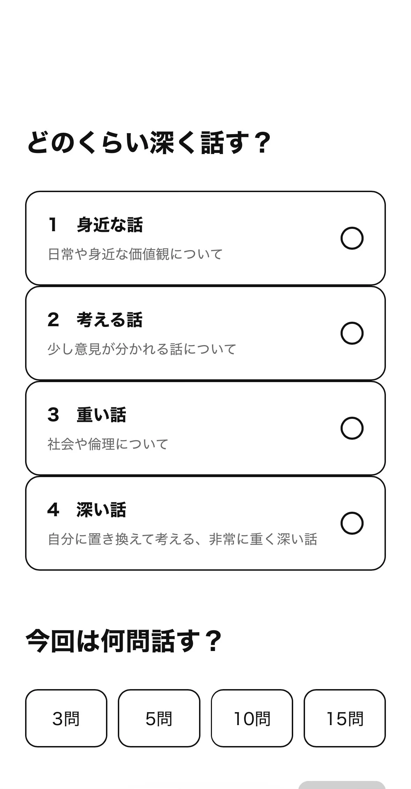

Omoiでできること
友達、恋人、家族と、普段はなかなか話さない価値観や社会問題について話すための質問カードです。「この人は、こういうふうに考えているんだ」と知るためのものです。
話す深さは選べます。話したくない質問は「今回は話さない」で飛ばせます。
| 形態 | 静的Webアプリ。アカウントは不要です。 |
|---|---|
| 保存 | 会話の答えや内容は保存しません。 |
| 深さ | Level 1〜4。問題数は3・5・10・15問から選びます。 |
| 質問 | 公開カタログは643件です。 |
| 関連 | Omoi for seriesとは別のプロダクトです。 |
使い方



利用前に確認すること
診断や採点を行うサービスではありません。話したくない質問は「今回は話さない」で飛ばせます。会話の答えや内容は保存しません。